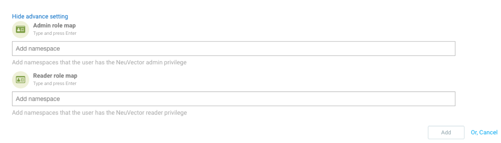

Enterprise Integration
Integration
SUSE® Security provides multiple integration options, including a REST API, CLI, Syslog, RBAC, SAML, LDAP, and webhooks. For examples of automating tasks by using the REST API, see the Automation section.
SUSE® Security also integrates with ecosystem partners such as Sonatype (Nexus Lifecycle), IBM Cloud (QRadar and Security Advisor), and Prometheus/Grafana. Many integrations are available in the NeuVector GitHub repository.
The following integration settings are available in the SUSE® Security UI under Settings.
OpenShift and Kubernetes RBAC
Enable this option if you use Red Hat OpenShift role-based access control (RBAC) and want SUSE® Security to read and enforce those permissions automatically.
When enabled:
-
OpenShift users can sign in to the SUSE® Security console using their OpenShift credentials.
-
Users can access only the resources (projects, containers, nodes, and so on) allowed by their OpenShift role.
-
Authentication uses the OAuth 2.0 protocol.
|
Do not use the OpenShift |
|
The default SUSE® Security Admin user and any users created directly in SUSE® Security remain active when OpenShift RBAC is enabled. |
Trust External Root CAs with Helm
SUSE® Security can trust external root Certificate Authorities (CAs) for secure connections such as LDAPS, OpenID Connect (OIDC), and registry scanning. This capability enables trusted communication with external authentication services and image registries.
When you configure trusted root CAs through the SUSE® Security Manager UI, the CA information is stored in the internal database. No Kubernetes Secret or ConfigMap is created automatically. Because Helm manages configuration through Kubernetes resources, this setting cannot be managed through Helm by default.
To configure trusted root CAs by using Helm, create a custom ConfigMap that provides the CA certificates and enables TLS verification.
-
Create an override file.
Create an
override.yamlfile that includes the CA certificate and TLS settings:controller: configmap: enabled: true data: sysinitcfg.yaml: | cacerts: - -----BEGIN CERTIFICATE----- MIID0zCCArugAwIBAgIU... -----END CERTIFICATE----- enable_tls_verification: true -
Deploy SUSE® Security with Helm.
Deploy SUSE® Security by using the override file:
helm install neuvector neuvector/core \ -n neuvector \ --set manager.svc.type=NodePort,imagePullSecrets=regsecret \ -f override.yamlAfter deployment, Helm reports a successful installation.
+
Confirm that the configuration is applied by inspecting the neuvector-init ConfigMap:
+
kubectl get cm neuvector-init -o yaml+
Verify that the CA certificate and enable_tls_verification setting appear in the output.
+
|
After installation, verify that SUSE® Security is running and accessible: Open the displayed URL in a browser to access the SUSE® Security Manager UI. |
Kubernetes RBAC
To manually configure Kubernetes RBAC for specific namespaces:
-
Go to Settings → Users → Add User.
-
Open Advanced Settings.
-
Specify the namespaces that the user can access in SUSE® Security.

Syslog
Configure Syslog integration by entering the Syslog server address and selecting the notification level. You can use an IP address or DNS name and choose either UDP or TCP.
Webhooks
SUSE® Security can send notifications to an external endpoint by using webhooks. Specify the webhook endpoint URL to receive notifications.
You can configure webhook notifications for custom events under Policy → Response Rules.
Directory and SSO Integration
SUSE® Security supports directory and single sign-on (SSO) integrations, including LDAP, Microsoft Active Directory, SAML, and OpenID Connect.
For information about predefined and custom roles that can be mapped during integration, see Users and Roles.